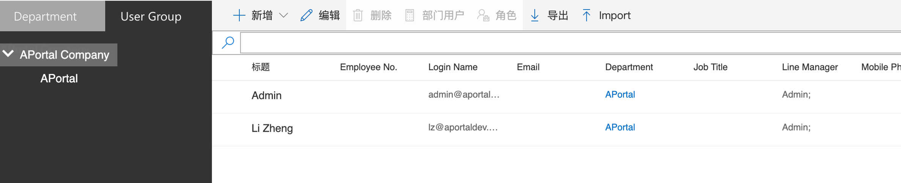
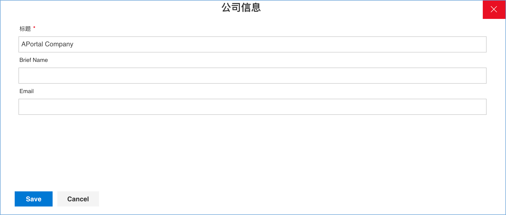
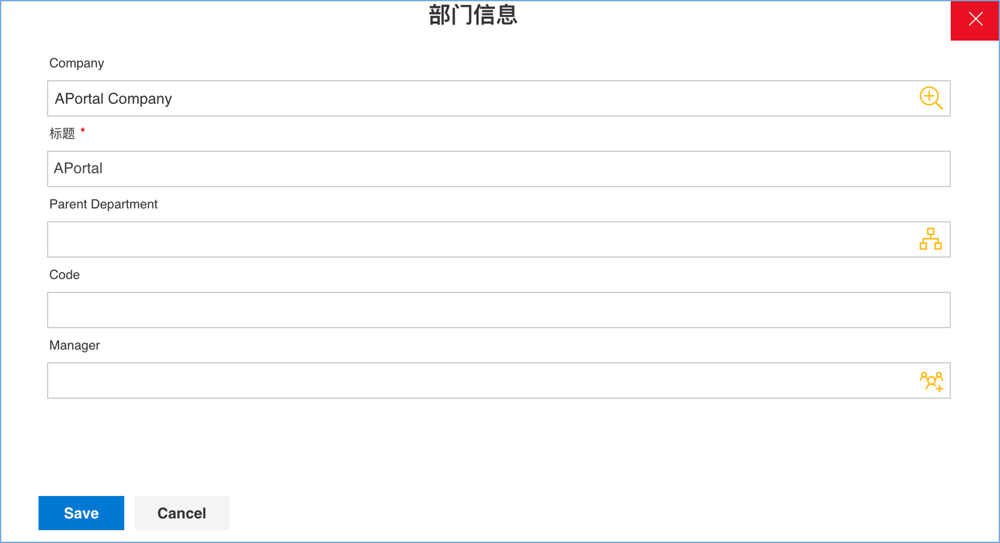
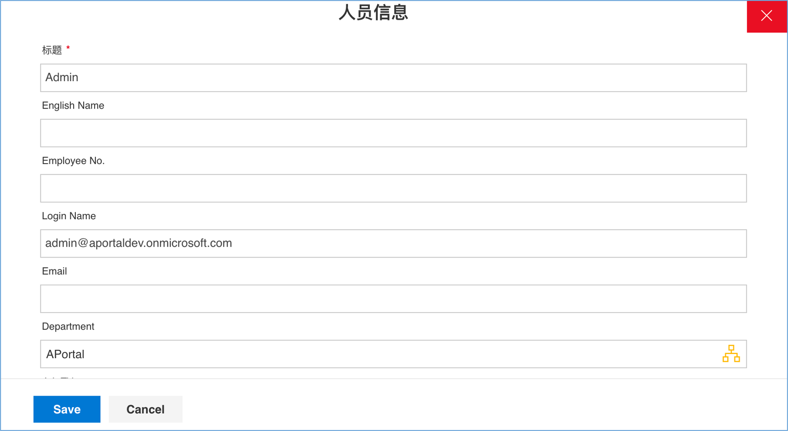

设置
在安装好 APortal 管理工具，且设置好启用 APortal 功能的 SharePoint Online 网站后，需要对网站进行初始设置，为下一步创建表单和流程做准备。
系统参数设置
在系统参数列表SSF_Parameters中存在下列基本参数。
| 参数名称 Title |
参数类 Parameter Type |
值类型 Value Type |
值 Value |
说明 |
| SSF_CurrentVersion | 1 | 3 | V1 | 用于控制包括界面菜单，工作流中心导航栏等界面元素的刷新。 |
| SSF_DateOnlyFormat | 1 | 3 | YYYY/MM/DD | 系统中显示的日期格式。 |
| SSF_DateTimeFormat | 1 | 3 | YYYY/MM/DD HH:mm | 系统中显示的日期+时间格式。 |
| SSW_ApprovalEmailSubject | 1 | 3 | 参照《系统邮件模板设置》 | 系统中用于发送审批任务提醒的电子邮件标题和内容模板。 |
| SSW_ApprovalEmailBody | 1 | 6 | 参照《系统邮件模板设置》 | 系统中用于发送审批任务提醒的电子邮件标题和内容模板。 |
组织结构和用户
APortal安装完成后，将在站点上创建1个公司 – APortal Company、1个部门 – APortal、1个用户 – Admin。通过下面的页面进入APortal组织结构管理模块：
站点URL/SitePages/orgcenter.aspx

编辑公司
每个APortal站点仅支持一个公司，如果需要修改默认的公司名称（APortal），可在左侧组织结构树中选择顶点 APortal Company，然后点击 编辑 进入公司信息编辑页面，编辑公司名称，简称，邮件等信息，完成后点击 保存 按钮保存修改的信息。

编辑部门
如果有更多的分子公司，工厂，事业部等，可以以公司下的部门形式构建。如果需要修改系统默认创建的部门名称，可从左侧组织结构树中点击选择 APortal，然后点击 编辑 进入部门信息编辑页面，编辑部门名称、上级部门（如果是根部门则无上级部门），部门代码，部门精力等属性，编辑完成后点击 保存 按钮保存编辑后的部门信息。

编辑用户
APortal安装完成后，用户需要将APortal创建的第一个用户：Admin，与站点的管理员帐号联系起来，方法是：
- 在左侧组织结构树中选择APortal部门，右侧将显示APortal部门下的用户列表
- 从用户列表中选择名为 Admin 的用户，点击『编辑』按钮编辑Admin用户信息，将 Login Name 字段的值修改为实际站点管理员帐号，例如：admin@aportaldev.onmicrosoft.com。
- 编辑完成后点击 保存 按钮保存编辑后的用户信息，如下图：

请注意，每个用户都必须关联一个部门，上述Admin用户已经默认关联了名为APortal的部门。除非已经在系统中维护了实际的业务部门，否则不要删除或修改Admin用户的部门。